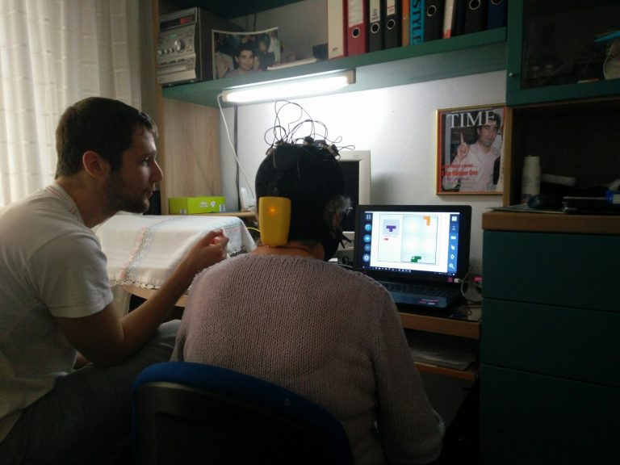

Information access and communication are among the main challenges that people affected by severe
disabilities have to face. World Wide Web provides a large amount of information to people, and it helps them to
connect and communicate with society. In this regard, the World Wide Web Consortium’s Web Accessibility
Initiative
(WAI) states: “Web accessibility means that people with disabilities can perceive, understand, navigate, and
interact with the Web, and that they can contribute to the Web”. However, these operations on Web interfaces
are
usually performed through conventional browser applications, controlled by input devices such as mouse or
keyboard. In this regard, eye gaze
interaction provides a novel tool to build hands-free Web interfaces, and to increase Web accessibility for
cases where motor impairments hinder easy hand and body motion. Most graphical user interfaces (e.g., browsers)
for Web access are not designed for use with eye tracking devices, which often have limited accuracy or may
require unconventional selection techniques that interfere with access to information. Different interaction
techniques like reading, scrolling, and clicking have been studied for precise eye-based access. However a
major challenge to imply these interactions on Web is to identify the interactive Web elements and to include eye
tracking events with the Web technology. The Text 2.0 framework provides a pertinent guideline for the Web
developers to integrate eye gaze interactions in their Web application. But it does not resolve the problem of
browsing the current Web with eye-based interactions. For this purpose, users have to rely on gaze emulation of
mouse and keyboard to operate current desktop browsers, which suffers from low usability in the sophisticated
scenario of Web browsing. Furthermore, there have been some approaches to develop prototypes of gaze-controlled
Web browsers with very limited functionalities. To the best of our knowledge, there are no available browsers
providing a wholesome gaze-adapted interface with automatic extraction and handling for complete and smooth Web
access via gaze commands. In this work, we propose GazeTheWeb, an open source framework to adopt Web
interfaces
for gaze interaction, where the input events (which are typically composed of mouse and keyboard interactions in
generic applications) are revised to eye movements. In comparison to current approaches of additional browser
extensions to include eye gaze events, we peruse a novel methodology of expending Chromium Embedded
Framework
(CEF), which provides more utility and control to build eye controllable interfaces.
GAZE THE WEB
GazeTheWeb supports unobtrusive gaze-based Web access by a browser incorporating efficient interface
design and Web engineering. The browser interface is built upon gaze interaction paradigm, i.e., interface
components such as size, shape, appearance and feedback, which are vital to compensate eye tracking accuracy for
input control.
Additionally, the usage frequency of Web navigation (e.g., back, forward, click) has been considered for
placement and positioning of elements. The Web engineering aspect examines the location of selectable objects on
webpages, such as text input fields, hyperlinks, scrollable sections, select fields, etc. The extracted elements are
then represented with explicit/implicit indicators to be accessed by eye gaze input. GazeTheWeb browser has been
released under an open source license, available on GitHub.
The eye-tracker illuminates the eyes of the user with infrared light and a camera records the eye movements. A
calibraton provides an estimation of fixations of the user on the screen. We use the fixations for interaction
with virtual buttions in the graphical interface of GazeTheWeb.
Story
GazeTheWeb has been evaluated as part of the MAMEM project at three clinical cohorts in Athens, Thessaloniki and
Tel
Aviv, in two trial phases.
At the first trial phase in February 2017, 18 participants with motor impairment succesfully performed dictated
tasks in the World Wide Web.
The second phase has taken place in spring 2018, wheere 30 participants with motor impairment operated
GazeTheWeb
for one month a their homes on their own behalf.
The system allowed the particitpants to browse the World Wide Web, perform communication, access entertainment
and
retrieve information.

Impact
If you use our software as part for your own research, please be kind and cite our publication:
@inproceedings{w4a17gazetheweb,
title = {GazeTheWeb: A Gaze-Controlled Web Browser},
author = {Menges, Raphael and Kumar, Chandan and M{\"u}ller, Daniel and Sengupta, Korok},
booktitle = {Proceedings of the 14th Web for All Conference},
year = {2017},
series = {W4A '17},
isbn = {978-1-4503-4900-0},
url = {http://dx.doi.org/10.1145/3058555.3058582},
publisher = {ACM},